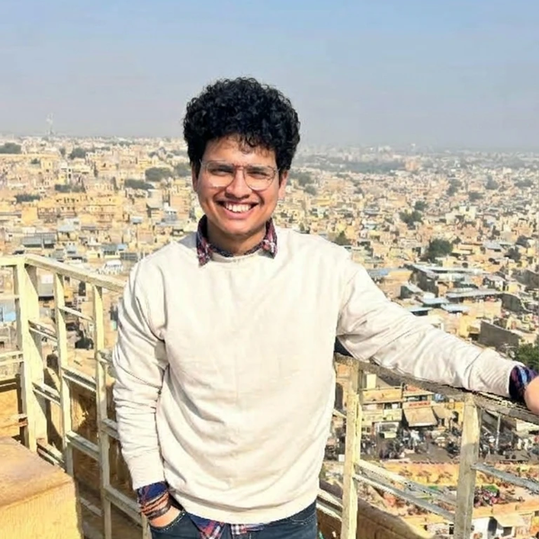

CERL
Combustion Engineering Research Laboratory
Department of Chemical Engineering
Indian Institute of Technology Delhi
Indian Institute of Technology Delhi
M.Tech scholar, Combustion Engineering Research Laboratory

Ankit Sayanna Myana is an M.Tech scholar in Chemical Engineering at the Indian Institute of Technology Delhi, working under the guidance of Prof. Abhijeet Raj. His research uses computational fluid dynamics to understand multiphase and reacting flows in large-scale energy equipment, with a focus on coal combustion, soot formation and heat transfer in industrial boilers.
He is currently developing a full-scale CFD model of a pulverized-coal-fired boiler in ANSYS Fluent, resolving conjugate heat transfer through its superheater and heat-exchanger panels. In earlier work, he showed that the widely used Moss–Brookes soot model significantly under-predicts coal-derived soot when tested against drop-tube experiments, and replaced it with a tar-to-soot surrogate mechanism. He believes simulation earns trust only when it is tested against data.
Before joining IIT Delhi, Ankit completed an M.S. at NIT Tiruchirappalli and a B.E. at Thadomal Shahani Engineering College, Mumbai, both in Chemical Engineering. He has industrial experience as a Process Engineer Trainee at Toyo Engineering on an ammonia–urea fertilizer project, and through internships at Aditya Birla Science & Technology Company, IOCL R&D and CEAT. He aims to pursue doctoral research in multiphase flow and heat transfer for clean and reliable energy systems.
ANSYS Fluent and Fluent Meshing · DesignModeler / SpaceClaim · Aspen Plus · SuperPro Designer · OpenLCA · Python · MATLAB · Finite volume and numerical methods
Ankit is the elected M.Tech Representative on IIT Delhi’s Student Affairs Council, serves as Alumni & Career Coordinator for ChES, and helps organise the Chem RD² 2026 research symposium. He previously coordinated an ANSYS workshop and hackathon at Tryst 2026.